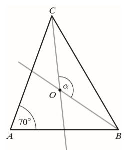
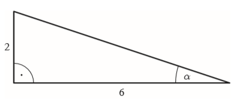
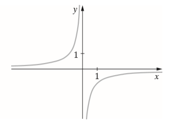
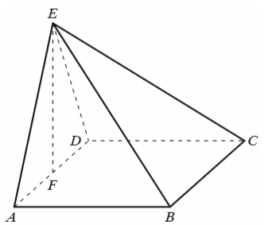

Matura 2019 listopad
Rozwiązania zadań z matury próbnej Wydawnictwa Operon
opublikuję po egzaminie 20 listopada 2019. Arkusz zostanie udostępniony na
tej stronie Wydawnictwa.
Wartość wyrażenia \((\sqrt{3}-\sqrt{6})^2\) jest równa:
A.\( -3 \)
B.\( 9-6\sqrt{2} \)
C.\( -3-3\sqrt{2} \)
D.\( 3 \)
B
Zbiorem rozwiązań nierówności \(|x|\le 4\) jest przedział:
A.\( \langle -4,4 \rangle \)
B.\( (-\infty ,4\rangle \)
C.\( (-4,4) \)
D.\( (-\infty ,-4\rangle \cup \langle 4,+\infty ) \)
A
Liczba \(3\log 2+\log 5^3\) jest równa:
A.\( \log 7^3 \)
B.\( \log 133 \)
C.\( 3\log 7 \)
D.\( 3 \)
D
Cenę pewnego towaru obniżono dwukrotnie: najpierw o \(20\%\), a następnie o
\(10\%\). Końcowa cena tego towaru jest niższa od ceny początkowej o:
A.\( 30\% \)
B.\( 72\% \)
C.\( 28\% \)
D.\( 15\% \)
C
Suma liczb \(0{,}3(7)\) i \(0{,}(7)\) zapisana w postaci ułamka zwykłego
nieskracalnego to:
A.\( \frac{52}{45} \)
B.\( \frac{115555}{100000} \)
C.\( \frac{29}{25} \)
D.\( \frac{23}{20} \)
A
Funkcja \(f\) przyporządkowuje każdej liczbie naturalnej większej od \(1\) jej
największy dzielnik będący liczbą pierwszą. Który zapis jest fałszywy?
A.\( f(22)\gt f(28) \)
B.\( f(21)=f(28) \)
C.\( f(25) \lt 10\)
D.\( f(28)\gt 9 \)
D
Osią symetrii wykresu funkcji kwadratowej \(f(x)=\frac{1}{7}(x-5)(x+9)\) jest
prosta o równaniu:
A.\( x=5 \)
B.\( x=-9 \)
C.\( x=-2 \)
D.\( x=-7 \)
C
Funkcja liniowa \(f(x)=(m^2-3)x+2\) jest rosnąca wtedy, gdy:
A.\( m \in (-\sqrt{3}, \sqrt{3}) \)
B.\( m \in (-\infty, -\sqrt{3})\cup (\sqrt{3}, \infty ) \)
C.\( m \in \{-\sqrt{3}, \sqrt{3}\} \)
D.\( m \in (\sqrt{3}, \infty ) \)
B
W trójkącie równoramiennym \(ABC\), w którym \(|AC|=|BC|\) poprowadzono dwusieczne
kątów \(ABC\) i \(ACB\). Dwusieczne te przecięły się w punkcie \(O\) (patrz rysunek). Jeśli
\(|\sphericalangle BAC|=70^\circ \), to miara kąta \(\alpha \) jest równa: 
A.\( 140^\circ \)
B.\( 110^\circ \)
C.\( 55^\circ \)
D.\( 125^\circ \)
D
Pole trapezu jest równe \(20\ \text{cm}^2\), a odcinek łączący środki ramion
trapezu ma długość \(4\) cm. Wysokości tego trapezu jest równa:
A.\( 5\ \text{cm}\)
B.\( 10\ \text{cm}\)
C.\( 2{,}5\ \text{cm}\)
D.\( 7{,}5\ \text{cm}\)
A
Rozwiązaniem równania \((2x-5)(3x+2)=(3x+2)(x+5)\) są liczby:
A.\( -\frac{2}{3} \) i \(10\)
B.\( -5 \) i \(2{,}5\)
C.\( -5 \), \(-\frac{2}{3}\) i \(2{,}5\)
D.\( -5 \) i \(10\)
A
W trójkącie przedstawionym na rysunku sinus kąta ostrego \(\alpha\) jest równy:

A.\( \frac{1}{3} \)
B.\( 3 \)
C.\( \sqrt{10} \)
D.\( \frac{\sqrt{10}}{10} \)
D
Funkcja, której wykres przedstawiono na rysunku jest rosnąca: 
A.tylko w przedziale \( (-\infty ,0) \)
B.tylko w przedziale \( (0,+\infty ) \)
C.w \( \mathbb{R} \backslash \{0\} \)
D.w każdym z przedziałów \( (-\infty ,0) \) i \((0, +\infty )\)
D
Szósty wyraz ciągu arytmetycznego \((a_n)\) jest równy zero. Suma jedenastu wyrazów
tego ciągu ma wartość:
A.\( 0 \)
B.\( 5 \)
C.\( 11 \)
D.\( -11 \)
A
W ciągu geometrycznym, który ma sześć wyrazów, dane są \(a_3=\frac{1}{2}\) i
\(a_6=\frac{1}{16}\). Zatem:
A.\( a_2=\frac{1}{4} \)
B.\( a_2=\frac{1}{8} \)
C.\( a_2=1 \)
D.\( a_2=2 \)
C
Sześciu robotników wykonało pewną pracę w ciągu \(6\) godzin i \(20\) minut. Ośmiu
robotników pracujących z taką samą wydajnością wykona tę samą pracę w ciągu:
A.\(8\) godzin i \(26\) minut
B.\(4\) godzin i \(45\) minut
C.\(4\) godzin i \(20\) minut
D.\(4\) godzin i \(40\) minut
B
Stosunek obwodów dwóch sześciokątów foremnych wynosi \(\frac{3}{4}\), a długość
boku większego z nich jest równa \(12\) cm. Mniejszy sześciokąt foremny ma bok długości:
A.\( 27 \) cm
B.\( 48 \) cm
C.\( 16 \) cm
D.\( 9 \) cm
D
Funkcję \(f(x)\) przesunięto wzdłuż osi układu współrzędnych, otrzymując funkcję o
wzorze \(g(x)=f(x+4)\). Wobec tego funkcję \(f(x)\) przesunięto o:
A.\( 4 \) jednostki w prawo
B.\( 4 \) jednostki w górę
C.\( 4 \) jednostki w lewo
D.\( 4 \) jednostki w dół
C
Równanie \(\frac{x^2-9}{x-3}=0\):
A.nie ma rozwiązań
B.ma dokładnie jedno rozwiązanie
C.ma dokładnie dwa rozwiązania
D.ma dokładnie trzy rozwiązania
B
Bok trójkąta równobocznego ma długość \(8\) cm. Odległość środka ciężkości tego
trójkąta od jego boków jest równa:
A.\( 2\frac{2}{3} \) cm
B.\( \frac{4\sqrt{3}}{3} \) cm
C.\( \frac{8\sqrt{3}}{3} \) cm
D.\( 4\sqrt{3} \) cm
B
Mediana uporządkowanego zestawu danych: \(4, 6, a, b, 8, 9\) wynosi \(7{,}5\).
Brakującymi wartościami \(a\) i \(b\) mogą być:
A.\( a=6,\ b=6 \)
B.\( a=6,\ b=7 \)
C.\( a=6,\ b=8 \)
D.\( a=7,\ b=8 \)
D
Przekątna sześcianu ma długość \(6\) cm. Objętość tego sześcianu jest równa:
A.\( 24\sqrt{3}\ \text{cm}^3 \)
B.\( 24\ \text{cm}^3 \)
C.\( 72\sqrt{3}\ \text{cm}^3 \)
D.\( 72\ \text{cm}^3 \)
A
Kąt rozwarcia stożka jest równy \(30^\circ \), a tworząca tego stożka ma długość
\(8\) cm. Pole przekroju osiowego tego stożka wynosi:
A.\( 64\ \text{cm}^2 \)
B.\( 32\ \text{cm}^2 \)
C.\( 16\ \text{cm}^2 \)
D.\( 16\sqrt{3}\ \text{cm}^2 \)
C
Trzycyfrowy kod aktywacyjny bramy wejściowej ma następującą postać: litera, cyfra,
litera. Litera jest wybierana spośród \(24\) liter alfabetu i może się w kodzie powtarzać, a cyfra
jest dowolna. Ile różnych kodów można w ten sposób utworzyć?
A.\( 58 \)
B.\( 480 \)
C.\( 5760 \)
D.\( 586 \)
C
Rzucono \(10\) razy standardową sześcienną kostką do gry. Średnia arytmetyczna
liczb oczek uzyskanych w pierwszych \(6\) rzutach była równa \(3{,}5\), a średnia arytmetyczna liczb
oczek uzyskanych w kolejnych \(4\) rzutach to \(4{,}5\). Średnia arytmetyczna liczb oczek w \(10\)
rzutach wynosi:
A.\( 4{,}1 \)
B.\( 4{,}0 \)
C.\( 3{,}9 \)
D.\( 3{,}8 \)
C
Rozwiąż nierówność \(2^{13}\cdot x-3\cdot 4^6\lt 8^4(3x-5)\).
\(x\gt 2\)
Na trójkącie o bokach długości \(\sqrt{5}, \sqrt{15}, \sqrt{10}\) opisano okrąg.
Oblicz długość promienia tego okręgu.
\(r=\frac{\sqrt{15}}{2}\)
Sprawdź, czy punkty \(A=(-2,3)\), \(B=(2,5)\), \(C=(2\sqrt{2},4+\sqrt{2})\) są
współliniowe.
Są współliniowe.
Uzasadnij, że równanie \(x^2+(a-1)x-a=0\) dla dowolnej liczby rzeczywistej \(a\) ma
przynajmniej jedno rozwiązanie.
Suma długości boku kwadratu i jego przekątnej jest równa \(1\). Oblicz długość
przekątnej tego kwadratu. Wynik zapisz w postaci \(a+b\sqrt{c}\).
\(2-\sqrt{2}\)
Rzucamy dwa razy symetryczną sześcienną kostką do gry. Oblicz prawdopodobieństwo
zdarzenia \(A\) polegającego na tym, że liczba oczek w drugim rzucie jest o dwa większa od liczby
oczek w pierwszym rzucie.
\(\frac{1}{9}\)
Trzy liczby tworzą ciąg arytmetyczny o różnicy \(r=-4\). Jeśli pierwszą i drugą
liczbę powiększymy o \(3\), a trzecią powiększymy o \(4\), to otrzymamy trzy kolejne wyrazy ciągu
geometrycznego. Oblicz liczby tworzące ciąg arytmetyczny i ciąg geometryczny.
Ciąg arytmetyczny: \((13, 9, 5)\), ciąg geometryczny \((16, 12, 9)\).
Podstawą ostrosłupa \(ABCDE\) jest kwadrat, a spodek \(F\) wysokości \(EF\)
ostrosłupa jest środkiem krawędzi \(AD\) (patrz rysunek). Ponadto wiadomo, że każda z dwóch
dłuższych krawędzi bocznych tego ostrosłupa ma długość \(12\sqrt{5}\) cm i jest nachylona do
płaszczyzny podstawy pod kątem \(60^\circ \). Oblicz objętość tego ostrosłupa. 
\(288\sqrt{15}\)
W gospodarstwie ogrodniczym zapakowano \(480\) róż do pewnej liczby kartonów. Gdyby
jednak do każdego kartonu włożono o \(3\) róże mniej, to do zapakowania tej samej ilości róż
należałoby użyć o \(8\) kartonów więcej. Do ilu kartonów zapakowano pierwotnie róże i ile róż było w
każdym kartonie?
\(15\) róż w kartonie i \(32\) kartony